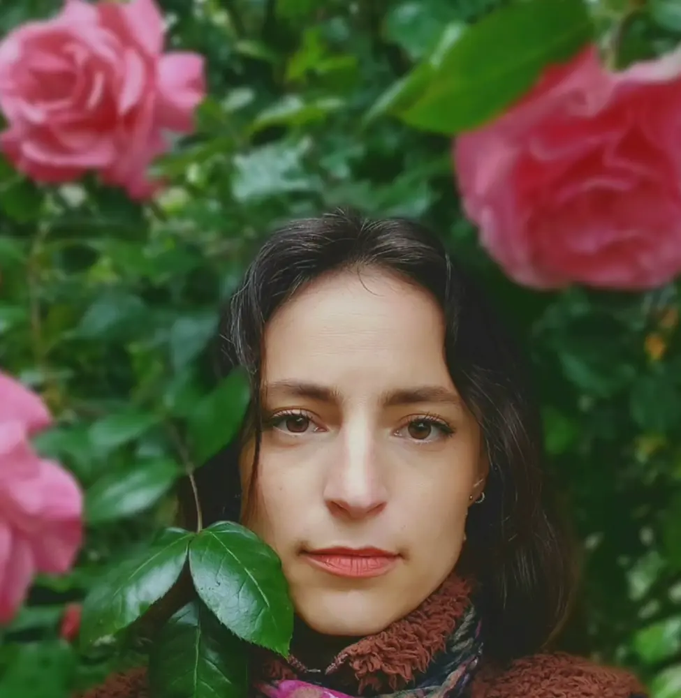

Artiste plasticienne et herboriste, Mariève Pelletier engage un travail marqué par l'histoire des femmes à travers l'art et son lien avec le végétal. L'émancipation de son travail trouve racine lors de ses études à Strasbourg à la HEAR (2009) où elle étudie intensivement les techniques alternatives de photographie, sous l'aile de la photographe et enseignante Camille Bonnefoi. Elle décide alors de s'installer définitivement en France et poursuit un master à l'ésam de Caen/Cherbourg. Elle obtient son diplôme national supérieur d'expression plastique (DNSEP) en 2017. Depuis, son travail navigue entre l'héritage canadien qu'elle conserve et les influences françaises de l'art.
A visual artist and herbalist, Mariève Pelletier pursues work shaped by women's history through art and its connection to the plant world. The emancipation of her practice took root during her studies in Strasbourg at the HEAR (2009), where she intensively studied alternative photographic techniques under photographer and teacher Camille Bonnefoi. She then decided to settle permanently in France and went on to complete a master's degree at the ésam in Caen/Cherbourg. She earned her DNSEP (national diploma in visual expression) in 2017. Since then, her work has moved between the Canadian heritage she carries with her and the French influences on her art.
Depuis la fin de ses études, son travail a été présenté au Québec, en France, en Belgique, au Japon et en Allemagne. Elle est membre du collectif d'artistes « À Venir » dont le mandat est d'investir des vitrines vides des centres-villes. Elle est aussi membre de l'association l'A.P.A (association de photographie ancienne de Paris) depuis plus de quinze ans. En 2022, les Archives du Calvados (France) font l'acquisition de neuf de ses photographies et un fonds photographique est créé en son nom. Elle s'implique activement dans la transmission des savoirs sur la photographie ancienne en donnant des cours ainsi que des interventions entre ces deux pays.
Since completing her studies, her work has been shown in Quebec, France, Belgium, Japan and Germany. She is a member of the artist collective "À Venir," whose mandate is to occupy vacant storefronts in city centres. She has also been a member of the A.P.A (Paris association for historical photography) for more than fifteen years. In 2022, the Archives du Calvados (France) acquired nine of her photographs, and a photographic fonds was created in her name. She is actively involved in passing on knowledge of historical photography, giving courses and talks in both countries.
Mariève Pelletier préside, depuis 2018, le collectif d'artistes « À Venir », dont le mandat est d'investir des lieux commerciaux vides des centres-villes pour y présenter des expositions temporaires. Le collectif a notamment porté Zone de Confort (Caen/Cherbourg, 2018), L'horizon Soupire (Caen, 2021) et Midnight Mochi (Art au Centre, Liège, 2021).
Mariève Pelletier has chaired, since 2018, the artist collective "À Venir," whose mandate is to occupy vacant commercial spaces in city centres for temporary exhibitions. The collective has notably presented Zone de Confort (Caen/Cherbourg, 2018), L'horizon Soupire (Caen, 2021) and Midnight Mochi (Art au Centre, Liège, 2021).
PressePress
Présence en ligneOnline presence
PublicationsPublications
Recherches sur son travailResearch on her work